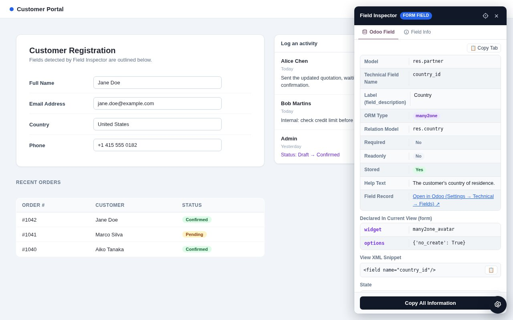
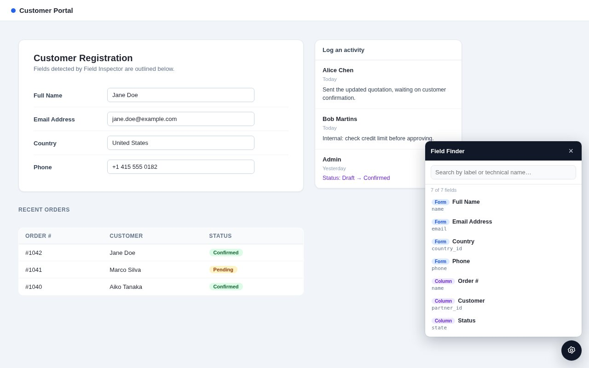
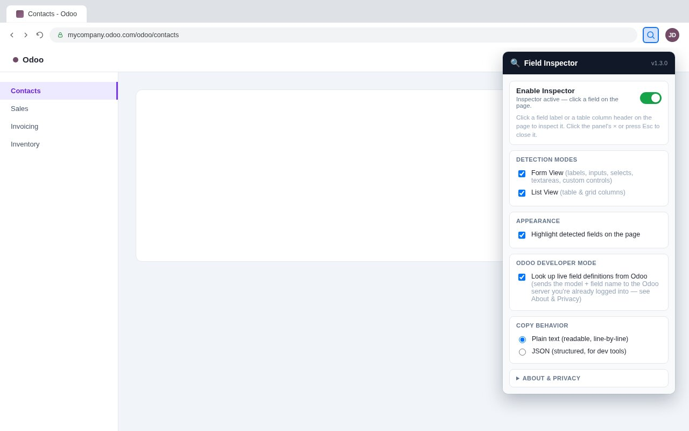
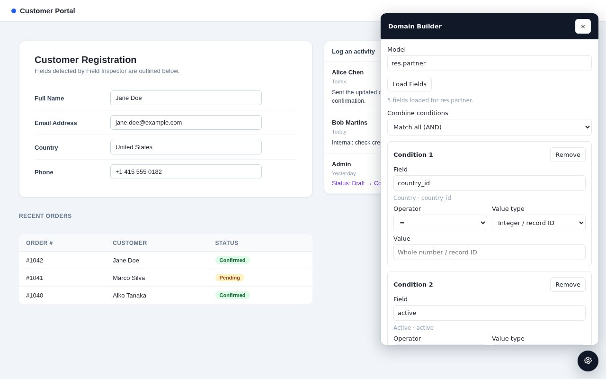
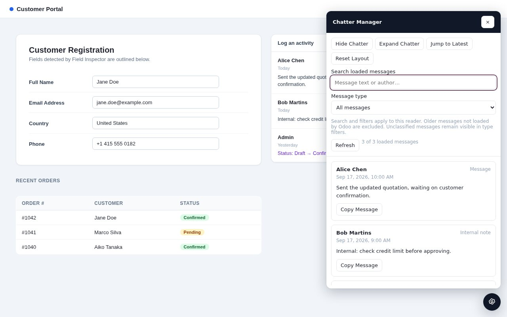

Firefox Extension · Developer Tools
Click a form field's label or a table's column header — on an Odoo page or any website — and a developer-tool style panel shows you everything about it, including a live lookup straight from ir.model.fields on Odoo pages.
Firefox edition of Odoo Field Inspector — same features, built for Firefox's WebExtensions implementation. The Chrome edition lives in a separate repository.
One click swaps guessing at CSS classes and opening Odoo's Technical Settings for an instant, accurate answer.
Model, ORM type, relation, required/readonly/stored state, help text, and how the field is actually declared in the current view — straight from your Odoo server's own ir.model.fields.
Generates the shortest selector and XPath that still uniquely resolve back to the exact element — ready to paste into a test script or view XML.
Search every field and list column on the page by label or technical name, live as you type. Open inside an Odoo wizard and it automatically scopes to just that dialog.
Build an Odoo search domain from the model's real fields — labels, types, and selection choices via fields_get — then copy it as a Python domain or JSON. Nothing is applied to records; it only generates the filter text.
Hide a form's chatter to reclaim screen space, or expand it into a searchable, filterable reader for already-loaded messages, notes, and tracked field changes — entirely local, no network requests.
Works on standard HTML forms and tables too, not just Odoo — labels, inputs, selects, textareas, ARIA-labelled custom controls, and <th>/grid columns.
Clicks on detected fields are intercepted before the page sees them — no checkbox ever toggles, no dropdown ever opens, no value ever changes.
Except one explicit, toggleable exception: Odoo field/model lookups, which ask the same Odoo server you're already logged into — never a third-party server. See the privacy policy.
Screenshots from the actual extension — not mockups.





manifest.json).Full setup, architecture notes, and a manual testing checklist are in the project README.